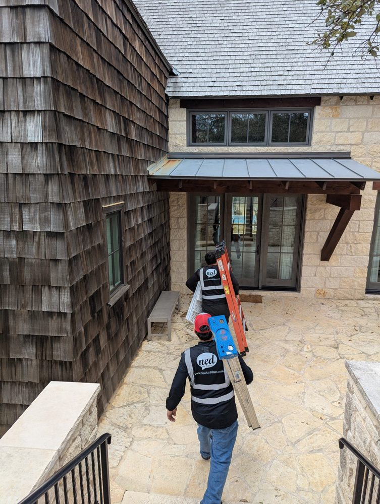
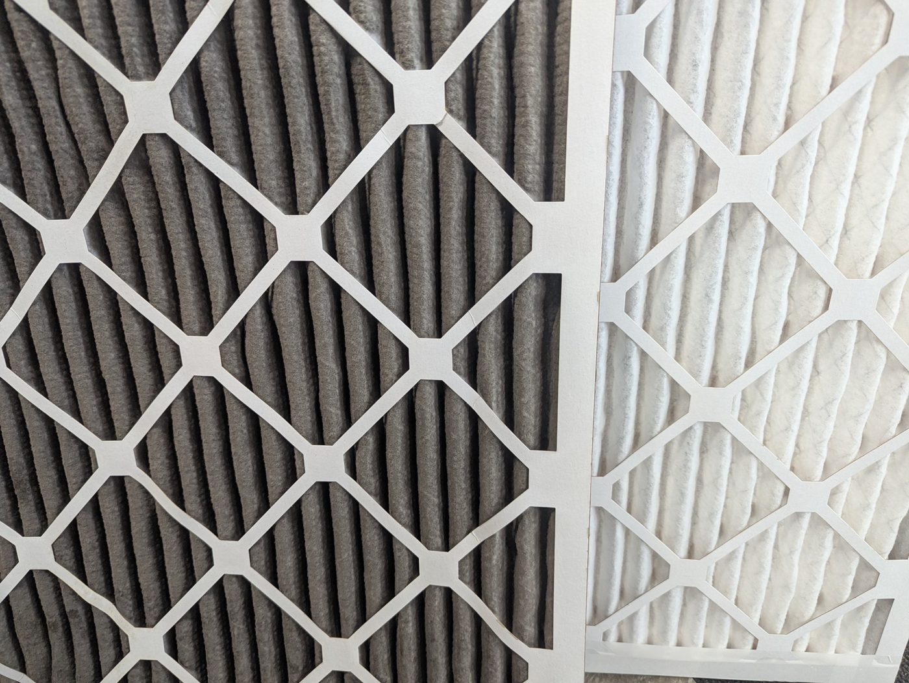

How to Find, Check and Change Your AC Filter (A 5-Minute Guide)
Changing your AC filter is one of the easiest home jobs there is. It takes about five minutes, usually needs no tools (just a step stool for ceiling vents), and it's one of the best things you can do for your air conditioner, especially through a long Texas summer.
We deliver and install filters all over San Antonio, and the most common thing we hear is, "I didn't even know where my filter was." So here's the whole process, start to finish.
Quick steps
- Find your filter: behind a return grille or at the indoor unit.
- Turn your thermostat off.
- Check the size printed on the old filter's frame.
- Look at the old filter to see how dirty it got.
- Slide in the new filter with the arrow pointing toward the unit.
- Write today's date on the frame.

Step 1: Find your filter
Your filter lives in one of two places:
- Behind a return air grille. This is a large vent, usually in a hallway, ceiling or wall, that pulls air into the system. If the grille has latches or clips, the filter is probably right behind it.
- At the air handler or furnace. This is the indoor unit, often in a closet, garage or attic. Look for a slot with a removable cover where the return duct meets the unit.
Some homes have more than one return, and each one may have its own filter. If you find one, check whether there are others.
Safety first: if your unit is in the attic, go up in the early morning. Texas attics can get dangerously hot on summer afternoons. And for ceiling grilles, use a sturdy step stool or ladder rather than a chair.
Step 2: Turn the system off
Switch your thermostat to Off before you pull the old filter. That stops the system from pulling dust and debris straight into the unit while the slot is open.
Step 3: Check the size
Slide the old filter out and look at the cardboard frame. The size is printed on it, something like 16x25x1: width, height, then thickness in inches. Take a photo of it with your phone so you always have it.
Don't be surprised if a tape measure gives you slightly smaller numbers. Filters are sold by their rounded "nominal" size, so always go by what's printed on the frame.
Step 4: Look at the old filter

Hold it up to a light. If you can barely see light through it, or it's grey with dust, it was overdue. That's useful to know, because it tells you how quickly your home clogs a filter. Homes with pets, allergies or construction nearby usually need changes more often.
Not sure how often yours should be changed? Our guide on how often to change your AC filter in San Antonio heat breaks it down by filter thickness.
Step 5: Put the new filter in the right way
Every filter has an arrow on the frame. The arrow shows the direction of airflow, so it should point toward the air handler or furnace, away from the room or the return grille.
Slide it in so it sits snugly, with no gaps around the edges where air could sneak past. Close the grille or cover, then switch your thermostat back on.
Step 6: Write the date on it
Grab a marker and write today's date on the frame. Next time you check, you'll know exactly how long it's been. While you're at it, set a reminder on your phone for your next check.
Common mistakes to avoid
- Installing it backwards. Always check the arrow.
- Buying the wrong size. A filter that's too small lets dirty air slip around the edges.
- Forgetting a second return. One clean filter and one clogged filter still means weak airflow.
- Waiting until something goes wrong. By the time the AC struggles, the filter has usually been clogged for a while.
Frequently asked questions
Which way does the arrow go on an AC filter?
The arrow points in the direction the air flows, so it should point toward the air handler or furnace and away from the room. If your filter sits behind a wall or ceiling grille, the arrow points into the wall or ceiling, toward the ductwork.
Can I run my AC without a filter?
It's best not to, even for a day. Without a filter, dust goes straight into the system and builds up on the indoor coil, which can mean weaker cooling and costly cleaning later. If you're out of filters, leave the old one in until the new one arrives.
What if the size isn't printed on my filter?
Measure the old filter, or the slot it sits in, and round up to the nearest whole inch. For example, 15.5 x 24.5 x 0.75 inches is a standard 16x25x1 filter. If you're unsure, send us a photo and we'll help you find the right size.
Rather not think about it? Ned Air Filters delivers the right size filters to your door, and we'll install them for you too, across San Antonio, Austin and Corpus Christi.